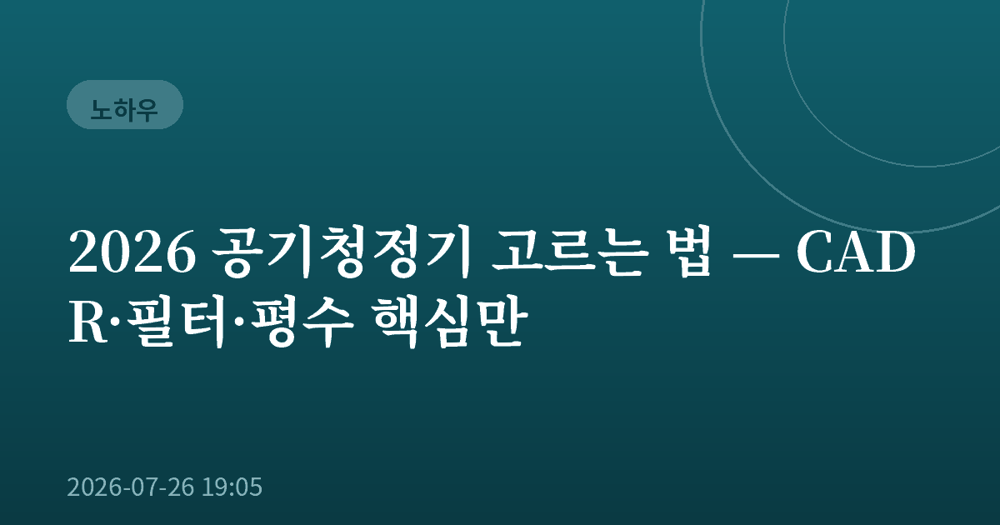
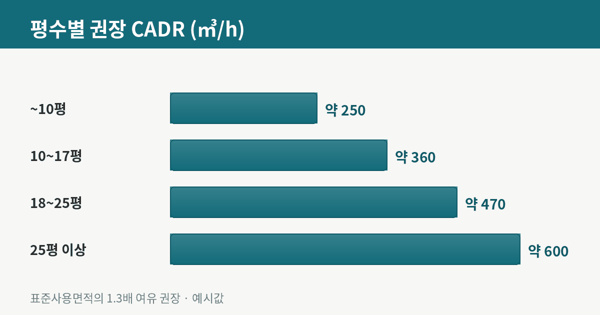
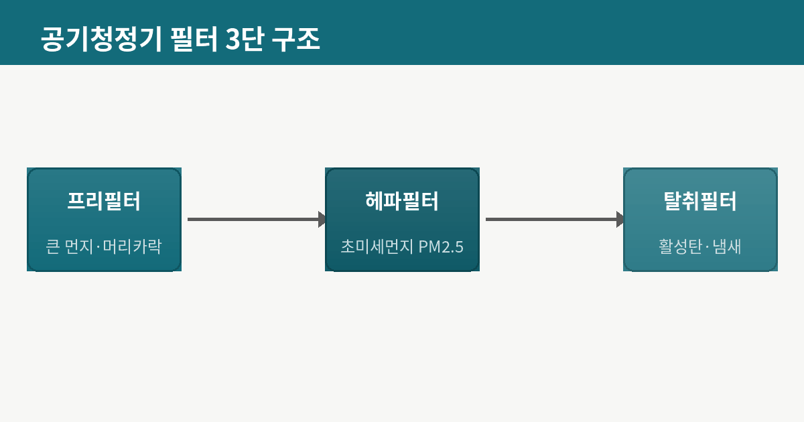
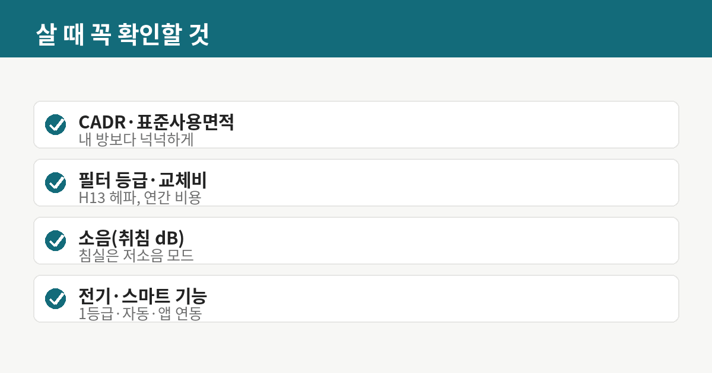
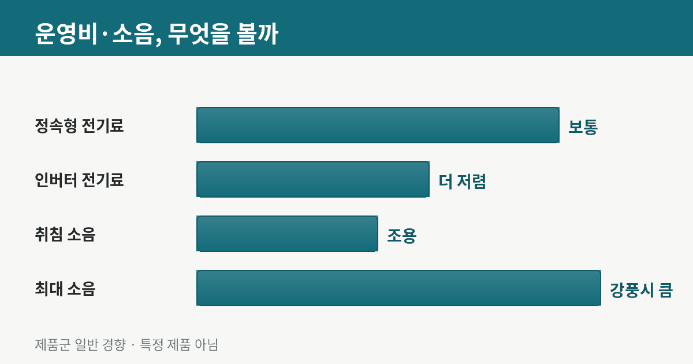

2026 공기청정기 고르는 법 — CADR·필터·평수 핵심만

협찬이나 실사용 후기가 아니라, 공개된 스펙과 선택 기준을 정리한 구매 가이드입니다. 특정 제품 광고가 아닙니다.
미세먼지 계절이 따로 없어진 요즘, 공기청정기는 계절 가전이 아니라 상시 가전이 됐습니다. 그런데 막상 고르려면 CADR, 표준사용면적, 헤파 등급, 소음까지 낯선 숫자가 쏟아집니다. 오늘은 마케팅 문구에 흔들리지 않고 핵심만 짚어 고르는 기준을 정리해 드리겠습니다.

1. 가장 먼저 볼 것 — 표준사용면적과 CADR
공기청정기 선택의 절반은 '용량'입니다. 여기서 핵심 지표가 두 가지인데, 하나는 제품에 표기된 표준사용면적이고 다른 하나는 CADR(청정공기 공급률)입니다. CADR은 깨끗한 공기를 시간당 얼마나 많이 내보내는지를 ㎥/h 단위로 나타낸 값으로, 숫자가 클수록 넓은 공간을 빠르게 정화합니다. 실전 요령은 간단합니다. 내 방 실제 면적보다 표준사용면적이 1.3배 이상 넉넉한 제품을 고르는 것입니다. 딱 맞는 용량은 최대 풍량으로 계속 돌려야 겨우 유지되기 때문에, 여유가 있어야 낮은 풍량으로 조용하고 효율적으로 쓸 수 있습니다.
2. 필터 — 등급과 교체비를 함께 본다
공기청정기의 심장은 필터입니다. 대개 세 겹 구조로, 큰 먼지와 머리카락을 거르는 프리필터, 초미세먼지(PM2.5)를 잡는 헤파필터, 냄새와 유해가스를 흡착하는 활성탄 탈취필터로 구성됩니다. 헤파필터는 등급이 나뉘는데, 가정용은 흔히 H11~H13이 쓰이고 숫자가 높을수록 미세한 입자까지 걸러냅니다. 여기서 초보자가 자주 놓치는 게 '교체 비용'입니다. 본체가 저렴해도 정품 필터가 비싸고 자주 갈아야 하면 총비용이 역전됩니다. 구매 전에 필터 권장 교체 주기와 연간 필터 값을 반드시 함께 계산해 보세요.

3. 소음 — 특히 침실이라면
스펙표의 소음(dB)은 보통 최대 풍량 기준이라 실제 체감과 다를 수 있습니다. 중요한 건 '취침 모드' 또는 최저 풍량에서의 소음입니다. 침실에 둘 제품이라면 저소음 모드에서 20~30dB대인지 확인하는 게 좋습니다. 여기에 실내 공기질을 감지해 자동으로 풍량을 조절하는 오토 모드가 있으면, 평소엔 조용히 돌다가 필요할 때만 세게 작동해 소음과 전기를 함께 아낄 수 있습니다.

4. 전기요금과 편의 기능
공기청정기는 24시간 켜두는 경우가 많아 에너지소비효율 등급이 곧 전기요금으로 이어집니다. 1등급 인버터 모델은 초기 가격이 조금 높아도 장기적으로 유리한 편입니다. 여기에 스마트폰 앱 연동, 필터 교체 알림, 공기질 표시등 같은 편의 기능이 붙는데, 있으면 편하지만 필수는 아닙니다. 화려한 부가 기능보다 CADR·필터·소음이라는 세 가지 기본기를 먼저 채우는 게 후회 없는 선택의 지름길입니다.

정리: 이 순서로 고르세요
먼저 내 방 면적의 1.3배 이상 되는 표준사용면적·CADR을 정하고, 헤파 등급과 연간 필터 비용을 확인한 뒤, 침실이라면 취침 소음을, 오래 켤 거라면 에너지 등급을 봅니다. 마지막으로 실제 구매 전에는 최신 가격과 사용자 리뷰를 꼭 비교하세요. 같은 스펙이라도 시즌과 프로모션에 따라 가격 차이가 크기 때문입니다.